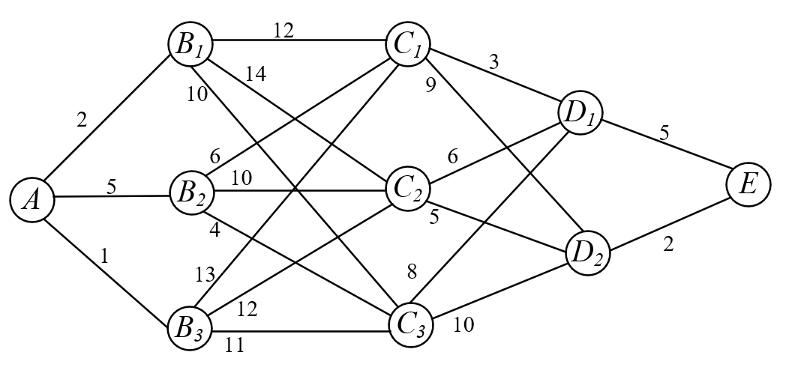
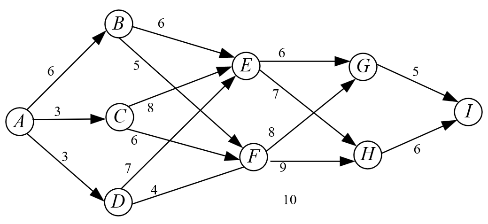
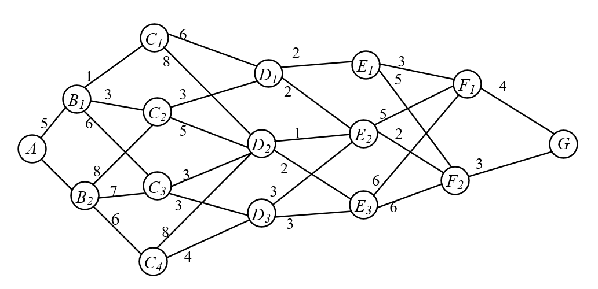

EXERCISE 01 / 17
习题 01简述动态规划的“最优性原理”及其适用条件…
简述动态规划的“最优性原理”及其适用条件，并举例说明一个不满足该原理的决策问题。
CHAPTER 09
学生用课后习题 · 共 17 题
EXERCISE 01 / 17
简述动态规划的“最优性原理”及其适用条件，并举例说明一个不满足该原理的决策问题。
EXERCISE 02 / 17
什么是“无后效性”？在动态规划建模中，为什么无后效性是重要的？请结合一个具体例子说明。
EXERCISE 03 / 17
试说明“阶段”“状态”“决策”“策略”在动态规划中的含义，并举例说明它们在最短路径问题中如何体现。
EXERCISE 04 / 17
用动态规划法求解最短路径。
从起点 到终点 之间各点的距离如图所示。求 到 的最短路径。

EXERCISE 05 / 17
某运输公司接到一项运输任务，要求从 城市运一批货物到 城市，下图是该区域公路网，图中点表示城市，两点之间如果有连线，表示两个城市之间有公路直接连接，线段旁的数字表示该段公路的距离，请问应该如何制定运输方案，使得运输的总距离最短。

EXERCISE 06 / 17
石油公司需要铺设石油运输管道，如下图所示，其中 为起点， 为终点，、、、、 分别为五个必须建立油泵加压站的地区，每个地区有若干个候选点，如 地区的候选点为 和 ，图中的线段表示管道可铺设的位置，线段旁的数字表示铺设该段管道所需的费用，问如何铺设管道才能使总费用最小。

EXERCISE 07 / 17
某公司现有 A、B、C 三个项目，投资人欲追加 400 万元投资，三个项目可以有不同的投资额度（单位：百万元），相应的收益值如下表所示。问应如何分配资金，才能使总收益最大。
| 投资额度（百万元） | 收益值（万元） | |||
|---|---|---|---|---|
| 2-4 | 项目 A | 项目 B | 项目 C | |
| 0 | 47 | 49 | 46 | |
| 1 | 51 | 52 | 70 | |
| 2 | 59 | 61 | 76 | |
| 3 | 71 | 71 | 88 | |
| 4 | 76 | 78 | 88 | |
EXERCISE 08 / 17
某公司今年引进了 6 位高层次人才，可分配到 4 个部门，每个部门获得人才数量不同其预期增加的效益也不同，如下表所示，为了使总效益值增加最大，应如何分配这些高层次人才到各部门。
| 高层次人才数 | 部门 1 | 部门 2 | 部门 3 | 部门 4 |
|---|---|---|---|---|
| 0 | 0 | 0 | 0 | 0 |
| 1 | 3 | 2 | 3 | 4 |
| 2 | 6 | 3 | 6 | 5 |
| 3 | 7 | 5 | 7 | 6 |
| 4 | 7 | 7 | 8 | 6 |
| 5 | 7 | 9 | 8 | 6 |
| 6 | 7 | 10 | 8 | 6 |
EXERCISE 09 / 17
某工厂拥有 100 台机器，计划分四个生产周期使用。在每一周期中，机器可以用于两种不同的生产任务。经验数据显示：若将 台机器用于第一种生产任务，则该周期结束后将有 台机器报废；其余机器若投入第二种生产任务，则其中的 报废。经济效益方面，每投入一台机器从事第一种任务，可获得收益 10 元；从事第二种任务，每台机器可获得收益 7 元。问：如何在四个周期中科学分配机器，使总收益最大？（按平均损耗率建立连续数量模型。）
EXERCISE 10 / 17
某工厂生产一种产品，预计未来四个月的市场需求量分别为：400 件、500 件、300 件和 200 件。已知：
每启动一次生产需要支付准备费用 500 元；
每件产品的单位生产成本为 1 元；
每件产品每月的库存保管费用为 1 元；
初始库存为 100 件；
要求 4 月底库存为零。
试确定该厂在未来四个月内的最优生产计划，使总费用最小。
EXERCISE 11 / 17
一个工厂生产某种产品，1～7 月份生产成本和产品需求量的变化情况如下表：
| 月份 () | 1 | 2 | 3 | 4 | 5 | 6 | 7 |
|---|---|---|---|---|---|---|---|
| 生产成本 () | 11 | 18 | 13 | 17 | 20 | 10 | 15 |
| 需求量 () | 0 | 8 | 5 | 3 | 2 | 7 | 4 |
为了调节生产和需求，工厂设有一个产品仓库，库容量 。已知期初库存量为 2，要求期末（七月底）库存量为 0。每个月生产的产品在月末入库，月初根据当月需求发货。求七个月的生产量，能满足各月的需求，并使生产成本最低。
EXERCISE 12 / 17
某商店在未来的4个月里，准备利用它的一个仓库来专门经销某种商品，仓库最大容量能储存这种商品1000单位。假定该商店每月只能卖仓库现有的货。当商店在某月购货时，下月初才能到货。预测该商品未来四个月的买卖价格如下表所示，假定商店在1月开始经销时，仓库储有该商品500单位。试问若不计库存费用，该商店应如何制订1月至4月的订购与销售计划，使预期获利最大。
| 月份（） | 购买单价（） | 销售单价（） |
|---|---|---|
| 1 | 10 | 12 |
| 2 | 9 | 8 |
| 3 | 11 | 13 |
| 4 | 15 | 17 |
EXERCISE 13 / 17
有一辆最大货运量为的卡车，用以装载3种货物，每种货物均可装多件且数量充足，每件的重量及相应价值如下表所示。应如何装载可使总价值最大？
| 货物编号（） | 1 | 2 | 3 |
|---|---|---|---|
| 单位重量/ | 3 | 4 | 5 |
| 单位价值（） | 4 | 5 | 6 |
EXERCISE 14 / 17
现有某种肥料共 6 单位重量，拟分配用于四块粮田施用。每块田施肥数量不同，其所对应的增产粮食数量如下表所示。试确定各块田的最佳施肥量分配方案，以使总增产量最大。
| 施肥量 | 粮田 1 | 粮田 2 | 粮田 3 | 粮田 4 |
|---|---|---|---|---|
| 0 | 0 | 0 | 0 | 0 |
| 1 | 20 | 25 | 18 | 28 |
| 2 | 42 | 45 | 39 | 47 |
| 3 | 60 | 57 | 61 | 65 |
| 4 | 75 | 65 | 78 | 74 |
| 5 | 85 | 70 | 90 | 80 |
| 6 | 90 | 73 | 95 | 85 |
EXERCISE 15 / 17
某大型设备制造企业需要对客户定制的产品制定 4 个月的生产计划，每个月客户的需求量分别为 1、2、5、3 台。生产每批设备的固定费用为 3 万元，若不生产则不产生固定费用。每台大型设备的制造费用为 10 万元，若每个月末有未销售的设备，每台设备将产生 0.5 万元的存储费用。该企业每个月的最大生产能力为 6 台，仓库的最大库存量为 4 台。问应如何安排生产，才能在满足客户需求的情况下使总的费用最小。
EXERCISE 16 / 17
EXERCISE 17 / 17
某厂为扩大生产能力，拟订购某种成套设备 4–6 套，以分配给所管辖的三个分厂使用。预计各分厂在分到不同套数的设备以后，每年创造的利润会有所不同，具体数据如表所示。问该厂应订购几套设备并如何分配才能使每年预计利润总额最大？（利润/万元）
| 分厂／设备套数 | 0 | 1 | 2 | 3 | 4 | 5 | 6 |
|---|---|---|---|---|---|---|---|
| 1 | 0 | 3 | 5 | 6 | 7 | 6 | 5 |
| 2 | 0 | 4 | 6 | 7 | 8 | 9 | 10 |
| 3 | 0 | 2 | 5 | 9 | 8 | 8 | 7 |